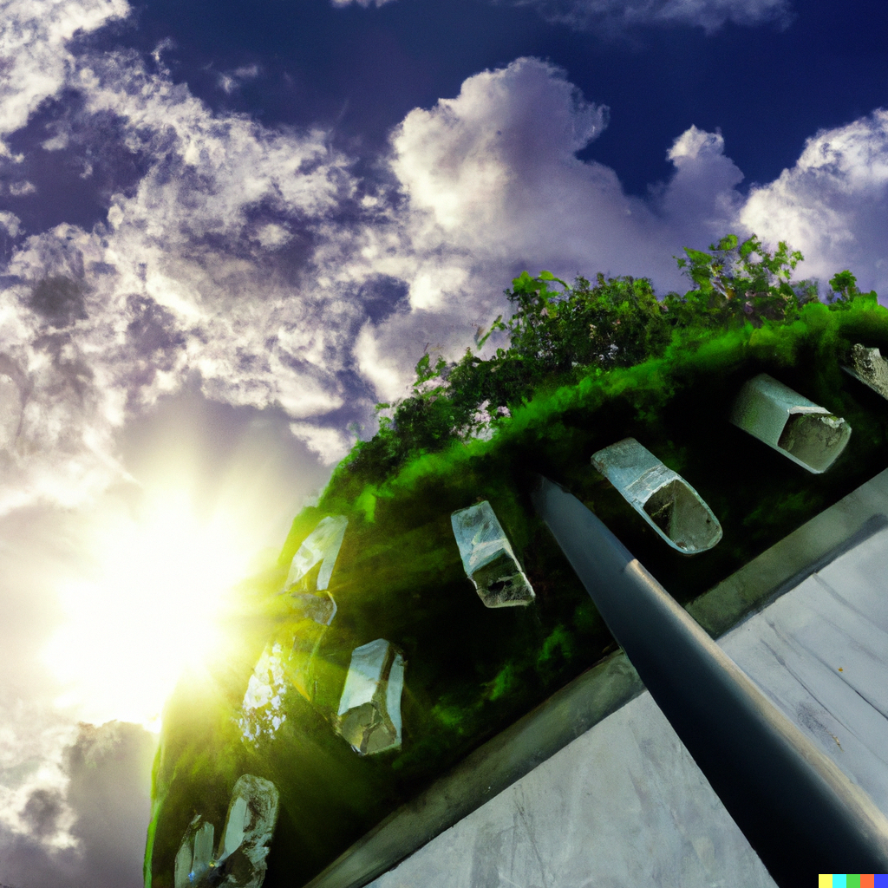

Neverwinter
- Population: 500,000, predominantly Human
- Government: House of Lords
- Defense: The Ten Thousand Crusaders of Light form a permanent standing army, supplemented by the Templar. The Armada is a fleet of Airships and Hippogriff Riders that patrol the skies, supplemented by the Reserve of chartered, privately-owned Airships that can be called up on emergency. The Magisterium provides the Arcane Legion.
- Commerce: Agriculture, Magic, Manufacturing, Technology, Trade, Travel
Description
Neverwinter is a formidable Urb, its silhouette stretching far into the horizon, testament to the ingenuity and resilience of the Urban League. A vast metropolis built on eight levels and powered by colossal wheels and caterpillar tracks, it is on the move during Winternight, searching for resources and evading the hordes that gather in darkness.
Constructed in ascending tiers, each is an intricate network of streets, factories, warehouses, and residences. The bottom tiers are primarily devoted to resource processing and manufacturing, a hectic maelstrom of machines overseen by the Artificer's Guild, while the upper tiers house the living quarters, businesses, and governmental institutions. In this complex ecology, larger structures devour smaller ones, mimicking the city's overall predatory nature.
The top of Neverwinter is dominated by St. Paul's Cathedral, a beacon of hope and solace amidst the sometimes grim Adamantium and steel. The Cathedral is an architectural marvel, the apex of the city, its spires rising dramatically towards the sky. Its gothic design is a stark contrast to the industrial aesthetic of the city, with ornate stonework and beautiful stained glass windows adding an element of charm.
Atop the cathedral sits the Arclight, the city's most revered Techno-Magical achievement. This Artifact emits soothing light that eradicates Aberrations, Fiends, and Undead while freezing Shapeshifters and casting even magical darkness. The Arclight’s bright halo is more than just a strong defense; it has become an integral part of Neverwinter’s identity. The warm, omnipresent light illuminates nearly every corner of the city and is visible from leagues away, a lighthouse guiding lost souls and a constant reminder of the city’s vigilance against the darkness.
Despite its unending hunt for resources and grim necessity of survival, Neverwinter remains a beacon of civilization and hope. The Arclight, its glow reflecting off St. George's Cathedral, is a testament to the Populi's capacity for resilience and innovation amidst the challenging, dystopian reality of the world.
Government
Neverwinter is governed by the House of Lords:
- Lords Temporal, 13 Peers who are appointed by and include the ranking Peer Marchioness Lyanna Alagondar.
- Lords Spiritual, 13 members of the Apostolic See who are appointed by and include the Archbishop Antonio Jesus Ramirez Villarreal of the Diocese of The Sword Coast.
- Lords Magical, 12 members of the Magisterium and 1 from the Artificer's Guild who are appointed by and include Chancellor Rhalyf Liabanise.
Military
- The Commandant of the Crusaders and the First Air Lord of the Armada answer to the Lords Temporal.
Layout
The city is organized into levels, each with a distinct purpose and function. Generally speaking, inhabitants do not tend to cross levels, and each level is a self-contained ecosystem. Each level contains structures that are multi-story, and the city is built on a series of wheels and caterpillar tracks that allow it to move. The city is powered by a combination of magic and technology, and the Artificer's Guild is responsible for maintaining the city's infrastructure.
Level 0
- Locomotion
- Mining
- Ore Processing
This level is the foundation of the city, and is primarily devoted to resource processing and manufacturing. It is a hectic maelstrom of constructs and machines overseen by the Artificer's Guild, and is the most dangerous level of the city.
Level 1
- Foundries
- Manufacturing
This level contains foundries and manufacturing facilities, and is where raw materials are processed into usable goods. Much of the labor is performed by Constructs, with unskilled laborers providing support.
Level 2
- Farms
- Franciscan Abbey
- Labor Housing
- Warehouses
This level contains the city's food production facilities, as well as warehouses where food and finished goods are stored. Farmers, laborers, and unskilled workers live here along with their families. The Franciscan Order provides services to the inhabitants of this level.
Level 3
- Businesses
- Guild Housing
- Markets
Level 3 is one of the few open levels of the city, being primarily devoted to businesses and commercial areas. Residents and outsiders flock here to buy and sell goods, and it is a bustling, vibrant level.
Level 4
- Artificers Labs
- Engineering
This level contains the city's power generation facilities and other vital techno-magical machinery. It is primarily inhabited by Artificer's Guild members and their families, and access is generally restricted.
Level 5
- The Armory
- The General Curia
- Noble Quarters
The Armory is a massive structure that houses the city's standing army, the Ten Thousand Crusaders of Light. Various Nobles also live on here, and access is generally restricted. The General Curia is located here, which is the headquarters of the Jesuit Order.
Level 6
- Hangars
- The Pilot House
- The Sky Docks
- Templar Barracks
The Pilot House of Neverwinter is in the forward quarter of this level, from where Neverwinter is piloted. The Sky Docks are located in the aft quarter, and are where the city's Airships and Hippogriff Riders are housed in the vast Hangars. The Templar Barracks are located in the middle of the level, and are where the city's Templar are housed.
Level 7
- The Arclight
- The Ledger of the Peerage
- The Magisterium
- The Marchioness' Palace
- St. Paul's Cathedral
This level contains the city's most important institutions, including the Ledger of the Peerage, the Magisterium, and the Marchioness' Palace.
St. Paul's Cathedral dominates the skyline, with the famous Hanging Gardens in the courtyard, all under the Blessed Light of the Arclight.
"Topside", as it is often called, is open to all citizens, and is the most beautiful and peaceful level of the city.
